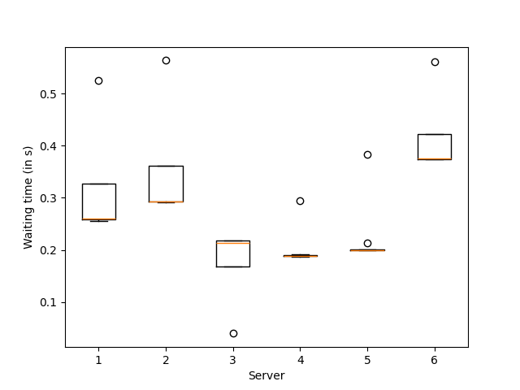

Note
Go to the end to download the full example code
A demo of Bandit BAI on a real dataset to select mirrors¶
In this exemple we use a sequential halving agent to find the best server to download ubuntu from among a choice of 8 french servers.
The quirck of this application is that there is a possible timeout when pinging a server. We handle this by using the median instead of the mean in sequential halving’s objective.
The code is in three parts: definition of environment, definition of agent, and finally definition of the experiment.
[INFO] 13:53: agent_name worker reward action max_global_step
SH 0 -0.361 6 8
[INFO] 13:53: agent_name worker reward action max_global_step
SH 0 -0.2 3 21
[INFO] 13:53: agent_name worker reward action max_global_step
SH 0 -0.187 3 35
[INFO] 13:53: agent_name worker reward action max_global_step
SH 0 -0.185 3 51
[INFO] 13:53: agent_name worker reward action max_global_step
SH 0 -0.186 6 67
[INFO] 13:53: agent_name worker reward action max_global_step
SH 0 -0.185 7 84
[INFO] 13:53: ... trained!
[INFO] 13:53: Saved ExperimentManager(SH) using pickle.
[INFO] 13:53: The ExperimentManager was saved in : 'rlberry_data/temp/manager_data/SH_2025-03-07_13-53-34_163c28d9/manager_obj.pickle'
The optimal action (fastest server) is server number 7
import numpy as np
from rlberry.manager import ExperimentManager, read_writer_data
from rlberry.envs.interface import Model
from rlberry_research.agents.bandits import BanditWithSimplePolicy
import rlberry.spaces as spaces
import requests
import matplotlib.pyplot as plt
import rlberry
logger = rlberry.logger
# Environment definition
TIMEOUT = 2
mirrors_ubuntu = np.array(
[
"https://ubuntu.lafibre.info/ubuntu/",
"https://mirror.ubuntu.ikoula.com/",
"http://ubuntu.mirrors.ovh.net/ubuntu/",
"http://miroir.univ-lorraine.fr/ubuntu/",
"http://ubuntu.univ-nantes.fr/ubuntu/",
"https://ftp.u-picardie.fr/mirror/ubuntu/ubuntu/",
"http://ubuntu.univ-reims.fr/ubuntu/",
"http://www-ftp.lip6.fr/pub/linux/distributions/Ubuntu/archive/",
]
)
def get_time(url):
try:
resp = requests.get(url, timeout=TIMEOUT)
return resp.elapsed.total_seconds()
except:
return np.inf # timeout
class MirrorBandit(Model):
"""
Real environment for bandit problems.
The reward is the response time for French servers meant to download ubuntu.
On action i, gives a negative waiting time to reach url i in mirror_ubuntu.
WARNING : if there is a timeout when querying the mirror, will result in
a negative infinite reward.
Parameters
----------
url_ids : list of int or None,
list of ids used to select a subset of the url list provided in the source.
if None, all the urls are selected (i.e. 8 arms bandits).
"""
name = "MirrorEnv"
def __init__(self, url_ids=None, **kwargs):
Model.__init__(self, **kwargs)
if url_ids:
self.url_list = mirrors_ubuntu[url_ids]
else:
self.url_list = mirrors_ubuntu
self.n_arms = len(self.url_list)
self.action_space = spaces.Discrete(self.n_arms)
def step(self, action):
"""
Sample the reward associated to the action.
"""
# test that the action exists
assert action < self.n_arms
reward = -get_time(self.url_list[action])
terminated = True
truncated = False
return 0, reward, terminated, truncated, {}
def reset(self, seed=None):
"""
Reset the environment to a default state.
"""
return 0, {}
env_ctor = MirrorBandit
env_kwargs = {}
# BAI Agent definition
class SeqHalvAgent(BanditWithSimplePolicy):
"""
Sequential Halving Agent
"""
name = "SeqHalvAgent"
def __init__(self, env, **kwargs):
BanditWithSimplePolicy.__init__(
self, env, writer_extra="action_and_reward", **kwargs
)
def fit(self, budget=None, **kwargs):
horizon = budget
rewards = []
actions = []
active_set = np.arange(self.n_arms)
logk = int(np.ceil(np.log2(self.n_arms)))
ep = 0
for r in range(logk):
tr = np.floor(horizon / (len(active_set) * logk))
for _ in range(int(tr)):
for k in active_set:
action = k
actions += [action]
observation, reward, terminated, truncated, info = self.env.step(
action
)
rewards += [reward]
ep += 1
reward_est = [
np.median(np.array(rewards)[actions == k]) for k in active_set
]
# We estimate the reward using the median instead of the mean to
# handle timeout.
half_len = int(np.ceil(len(active_set) / 2))
active_set = active_set[np.argsort(reward_est)[-half_len:]]
self.optimal_action = active_set[0]
self.writer.add_scalar("optimal_action", self.optimal_action, ep)
return actions
# Experiment
xp_manager = ExperimentManager(
SeqHalvAgent,
(env_ctor, env_kwargs),
fit_budget=100, # we use only 100 iterations for faster example run in doc.
n_fit=1,
agent_name="SH",
)
xp_manager.fit()
rewards = read_writer_data([xp_manager], preprocess_tag="reward")["value"]
actions = read_writer_data([xp_manager], preprocess_tag="action")["value"]
plt.boxplot([-rewards[actions == a] for a in range(6)])
plt.xlabel("Server")
plt.ylabel("Waiting time (in s)")
plt.show()
print(
"The optimal action (fastest server) is server number ",
xp_manager.agent_handlers[0].optimal_action + 1,
)
Total running time of the script: (0 minutes 21.241 seconds)